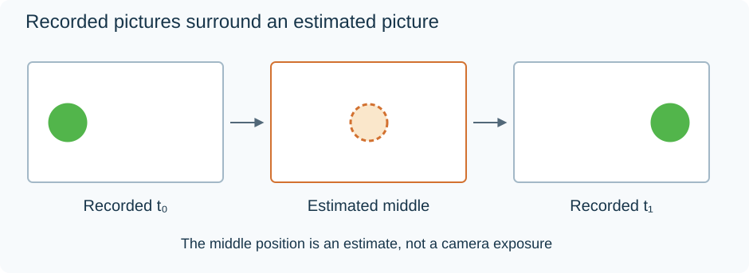

Motion Interpolation
Suppose a ball is at position 20 in a picture at 0 ms and at position 60 in the next picture at 40 ms. A display wants another picture at 20 ms.
Holding the first frame leaves the ball at 20. Blending the two frames can show faint balls at both 20 and 60. Motion interpolation instead tries to put the ball at a plausible intermediate position.

The middle picture is inferred from the two recorded pictures, rather than captured by the camera.
Compute the requested point in time
The requested instant is halfway between the source times:
α = (20 − 0) ÷ (40 − 0) = 0.5.
If the estimated motion is a straight, constant-speed displacement of 40 positions, the intermediate position is:
20 + 0.5 × (60 − 20) = 40.
At 10 ms, the same model would put it at position 30; at 30 ms, position 50. This is a trajectory estimate. The two observed endpoints do not reveal whether the real ball accelerated, curved, or briefly disappeared between them.
Find correspondence in the pictures
The interpolator first needs to decide which regions in the two frames represent the same content. A block-based method can search for a similar patch and record its displacement as a motion vector. Other methods estimate a finer motion field.
A whole scene has many such displacements. The camera may pan while a person moves independently, and different depths can shift by different amounts. Treating the complete picture as one translation would not handle all those regions.
The image is then warped toward the requested time. For a halfway picture, content from the earlier frame can be moved halfway forward; corresponding content from the later frame can be moved halfway backward. If both mappings are correct, their ball images line up at position 40.
The overlapping information can be combined to construct output samples. Spatial interpolation is still needed where a moved position falls between sample locations.
Why warping differs from blending
Consider a simplified bright object with value 100 on a dark background with value 0. In the first frame it occupies position 20, and in the second position 60.
An equal blend gives value 50 at both old positions. It averages the pictures without moving their content into alignment.
A correct motion warp aligns both object observations at position 40 before combining them. The combined object can remain value 100 at that intermediate position. This is the difference between a double outline and a reconstructed movement.
These scalar values illustrate the operations, not a filter's measured output or a complete image synthesis algorithm.
The picture may contain information neither endpoint supplies
An object can uncover a background that was hidden in one frame. A moving foreground edge also changes which surface occupies a sample. Forward and backward motion estimates may disagree around those occlusions.
The interpolator must decide which observation to use and how to fill a gap. If it uses the wrong surface's motion, a foreground edge can drag background texture along with it, creating a halo or warped outline.
Repeated patterns introduce another ambiguity: several fence bars may look equally similar. Thin lettering, a fast ball, motion blur, or a lighting change can also make correspondence unreliable. An incorrect match then becomes a visibly incorrect intermediate picture.
A scene cut is more fundamental. There is no continuous trajectory between two unrelated shots. Implementations can detect the cut and repeat an endpoint instead of inventing movement across it. FFmpeg's minterpolate documents that kind of scene-change handling.
Where the new motion appears
Interpolation can be applied while producing a file, in a player, or in a television after an Emby app delivers its frames. In the television case, the source and server delivery remain unchanged while the display constructs additional presentation pictures.
That can make a film look more like frequently sampled live video: the screen now shows more distinct intermediate positions. The source's photographed exposures and their blur still supplied the evidence. Synthesizing more positions does not recreate the actual camera observations between them.
Codec prediction has a different purpose. It constructs a predictor for an already encoded source picture, then uses transmitted corrections to reconstruct that picture. Motion interpolation has no transmitted original intermediate picture to correct toward. Its output follows the estimated scene model.